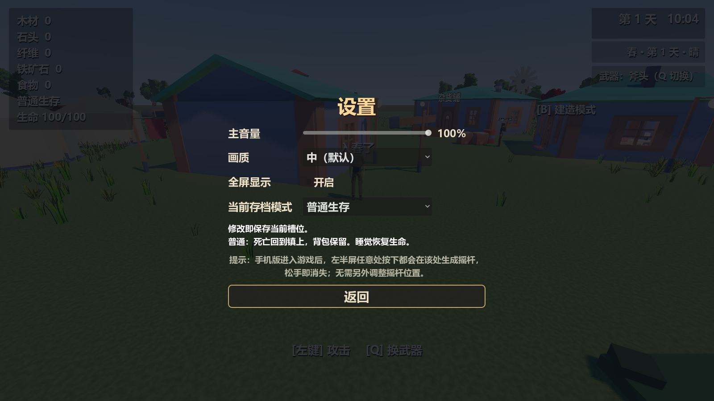
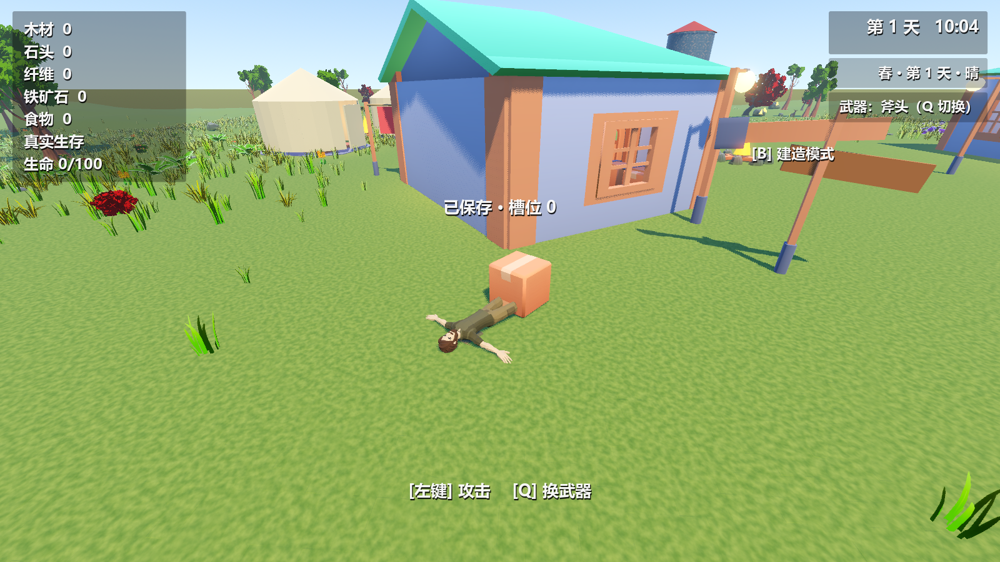
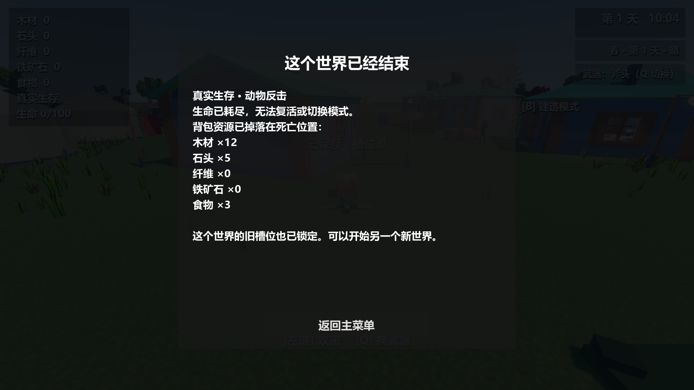
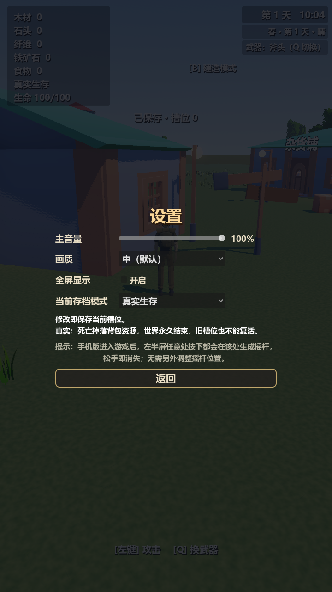
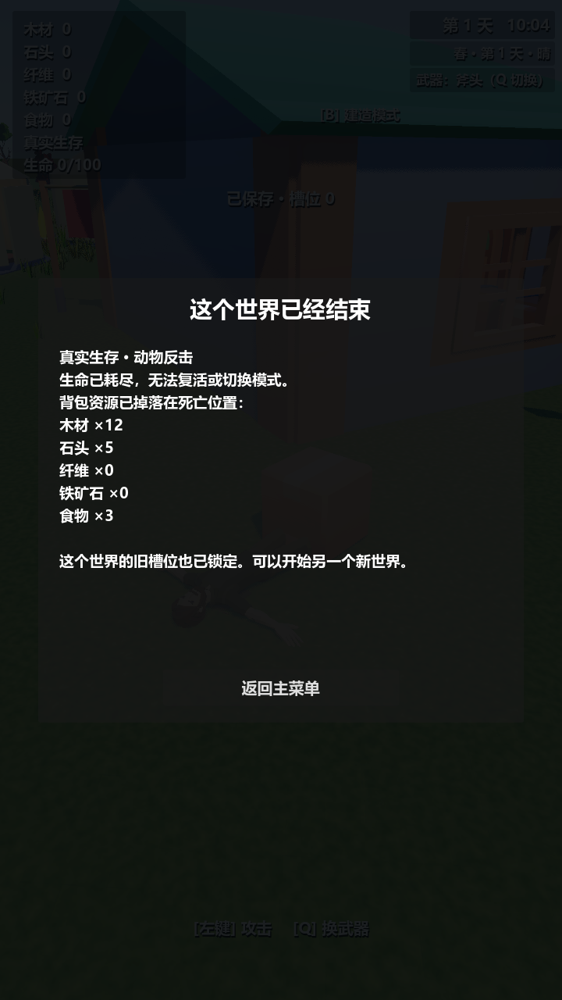

一个存档，三种玩法
存活时，在游戏内「菜单 → 设置 → 当前存档模式」切换并立即保存。主菜单里的「新存档模式」只决定下一次新游戏，不修改已有存档。模式与生命存进游戏文件，不混入全局音量、画质设置。

| 规则 | 普通生存 | 真实生存 | 创造模式 |
|---|---|---|---|
| 资源 | 正常扣除 | 正常扣除 | 建造、播种不扣；显示 ∞ |
| 生命 | 会受伤，睡觉恢复 | 会受伤，睡觉恢复 | 免伤 |
| 死亡 | 返回镇上，背包保留 | 背包掉落，世界结束 | 不会因伤害死亡 |
| 改模式 | 存活时允许 | 死亡后禁止 | 切回后保留有限库存 |
受伤来自实际动作和位置
生命上限 100。动物受到攻击后，仍存活才会短暂追近并反击；近身、朝向和墙体视线同时参与判断，反击扣 10 点，留出反击前摇与间隔。日常跳跃不受伤；较高落地按下降速度结算摔伤。氧气耗尽且头部仍在水下时，每秒扣 12 点，出水即停止。暂停时不会推进伤害。
固定地图下，8 米实际自由落体后生命为 64/100；真实水下缺氧采样约每秒损失 12 点。生命、模式显示在资源栏下方。
真实生存的死亡结束世界


每个世界有独立 ID。死亡先写入 user://ended_worlds/ 的结束标记，再保存死亡状态。同 ID 的旧槽位快照也被拒绝读取，存档列表标记「已结束」。删除槽位不移除结束标记；仍可以新建另一个世界。旧档首次读取会补入普通生存、100 生命与世界 ID，并把 ID 写回原槽位，之后重复读档身份保持一致。
横竖屏都能操作


验证记录
| 检查 | 结果 |
|---|---|
| 模式、真实建造／播种、伤害、追近、复活、锁档、旧JSON迁移与模式设置布局 | 145 项，fails=0 |
| 战斗／水域／进出／物理／骨骼动作 | 102／38／198／23／58 项，fails=0 |
| 端到端存读档 | fails=0 |
| UI／NPC与交易／道具／完整道具／植被 | 1605／711／34／90／183 项，fails=0 |
| 8 种触控分辨率 | 全部 bad=0 |
| 资产与依赖 | 119 场景、19 贴图、155 贴图表面、187 依赖，failed=false |
验证使用独立副本，避免覆盖个人存档；窗口模式截图已逐张检查。部分自检仍有退出时 ObjectDB 清理警告。此功能尚未重新打包到已有 Windows／安卓安装包，未做安卓实机性能与触控验证。